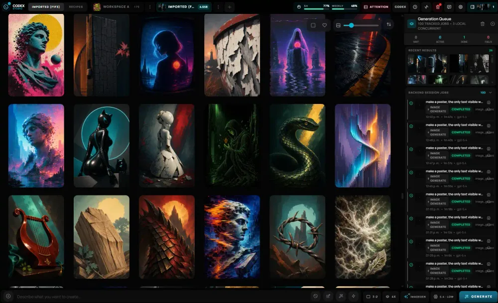
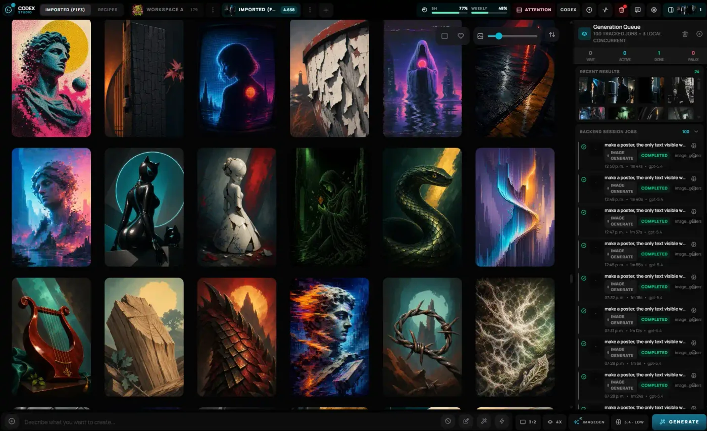
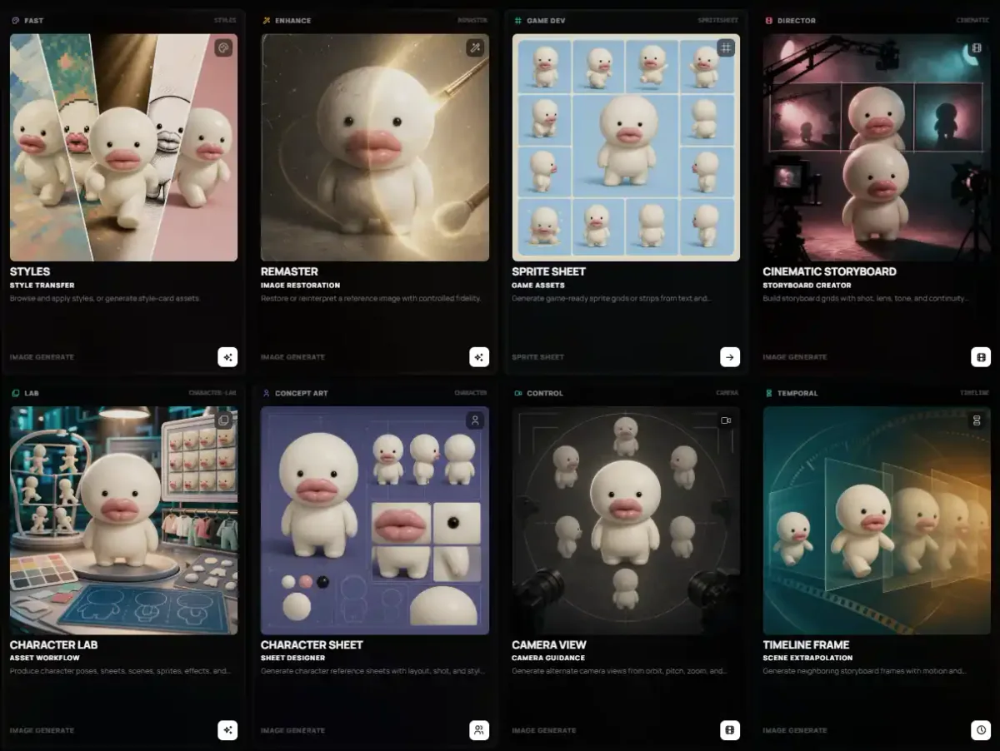
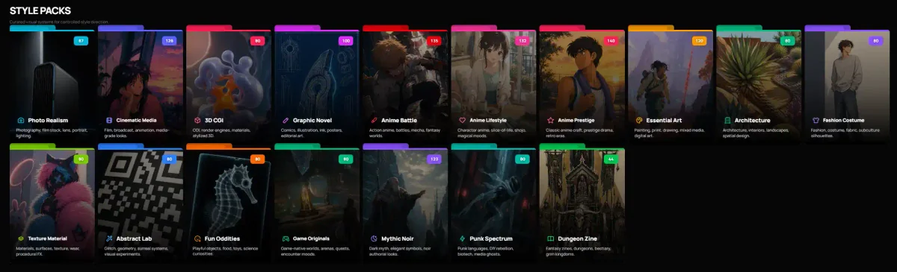
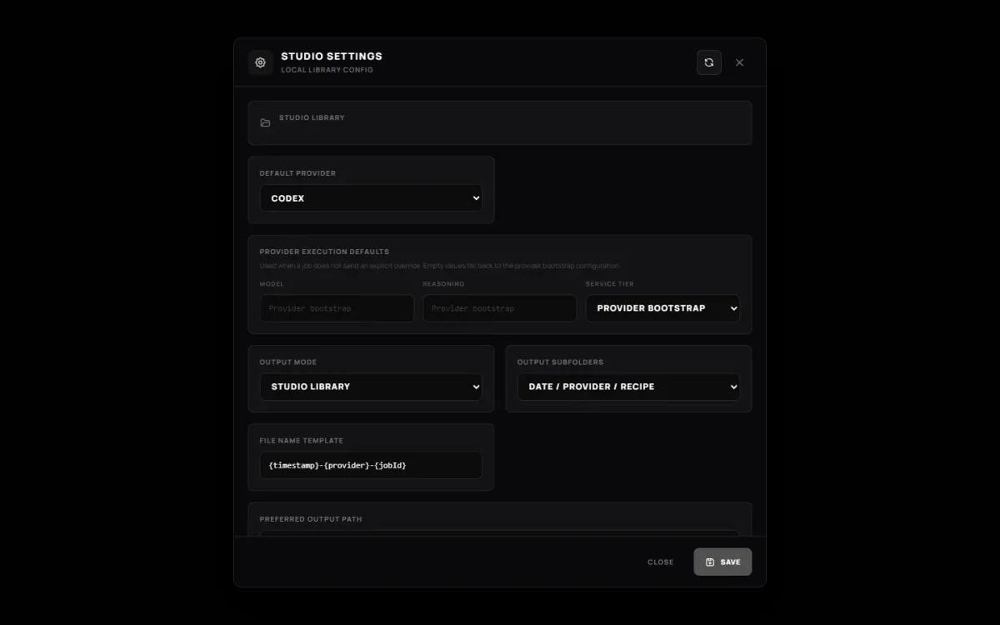

01 Local image operations
Create.
Trace.
Keep.
A local-first image studio built around your authenticated Codex session. Generate, review, and organize without turning your creative history into somebody else's cloud library.

- Assets
- Local
- History
- SQLite
- Primary runtime
- Codex
02 What stays true
A studio with boundaries.
-
01
Your library stays yours.
Images, thumbnails, transcripts, logs, and database state live in a Studio Library on your machine.
-
02
Every result has a trail.
Persistent jobs and Catalog Entries keep generation state inspectable after the browser reloads.
-
03
Codex stays at the center.
The default path uses your local Codex and ChatGPT session. Optional providers stay behind the same backend contract.
03 Product tour
One desk. Four working views.
Real screens from the app—not concept art or a hosted imitation.




04 Durable path
Intent becomes a local record.
05 Run locally
Three commands to the first frame.
Bring Bun, a modern browser, and an authenticated Codex CLI. The default Codex path does not require an OpenAI API key.
Open the setup guide$ bun install
$ bun run studio:init
$ bun run dev
# UI http://localhost:17222
# Local API http://localhost:17223